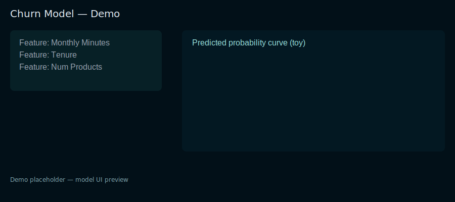

This demo lets you tweak a customer's usage to see churn probability from a toy logistic model. The prediction is provided by a small API.

Predicted churn probability: —
Model
Simple logistic function used to demonstrate model output. Replace with a real model endpoint for production.